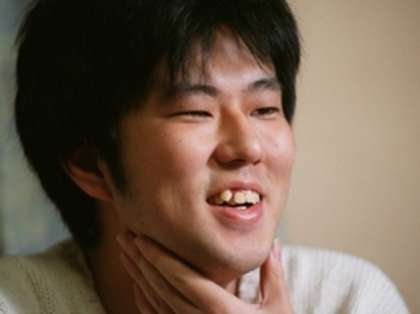
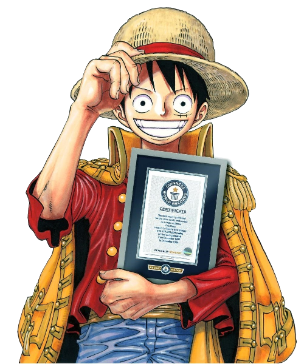

"Don't forget to smile in any situation.
As long as you are alive,
there will be better things later,
and there will be many." -
Career Retrospective
Early Years (1992-1993)
- Debuted in 1992. Released a one-shot manga called "WANTED!"
- Approval of publication from Monthly Shonen Jump.
- Later released more one-shot manga, "God's Gift for the Future" and "Ikki Yako"
Beginnings (1994-1996)
- Released a one-shot manga called "Monsters"
- Assisted Nobuhira Watsuki on the series "Rurouni Kenshin"
- Released a pirate-concept manga called "Romance Dawn"
One Piece (1997-present)
- Released "One Piece", serialized in Weekly Shonen Jump
- Involved in writing and directing the latest One Piece movies
Career Achievements
1992: place Tezuka Award for "WANTED!"
1993: Hop☆Step Award for "Ikki Yako"
2000-02: Tezuka Osamu Cultural Prize finalist for "One Piece"
2005: Sondermann Award in the International Manga category for "One Piece"
2006: Japanese Media Arts Festival 100 Manga Selection for "One Piece"
2008: Sondermann Award in the International Manga category for Volume 44 of "One Piece"
2009: Sondermann Award in the International Manga category for Volume 48 of "One Piece"
2012: Received Grand Prize at 41st Japan Cartoonists Association Award for "One Piece"
2015: Guinness World Record for "the most copies published for the same comic book series by a single author"
320,866,000 copies printed worldwide up until December 2014
2018: Kumamoto Prefecture Honorary Prize
2021: 1,000th chapter of "One Piece"
